zookeeper
0.先理解什么是微服务下的注册中心
随着单体应用拆分，首当面临的第一份挑战就是服务实例的数量较多，并且服务自身对外暴露的访问地址也具有动态性。
可能因为服务扩容、服务的失败和更新等因素，导致服务实例的运行时状态经常变化，如下图:
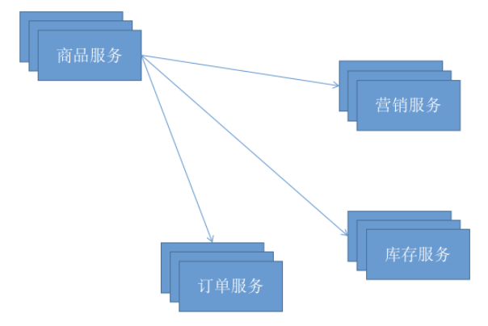
商品详情需要调用营销、订单、库存三个服务，存在问题有:
1.营销、订单、库存这三个服务的地址都可能动态的发生改变，单存只使用配置的形式需要频繁的变更，如果是写到配置文件里面还需要重启系统，这对生产来说太不友好了;
2.服务是集群部署的形式调用方负载均衡如何去实现；
解决第一个问题办法就是用我们用伟人说过一句话，没有什么是加一个中间层解决不了的，这个中间层就是我们的注册中心；
解决第二问题就是关于负载均衡的实现，这个需要结合我们中间层老大哥来实现；
接下来我们聊聊如何解决两个问题吧；
如何实现一个注册中心
对于如何实现注册中心这个问题，首先将服务之间是如何交互的模型抽象出来，我们结合实际的案例来说明这个问题，以商品服务来
1.当我们搜索商品的时候商品服务就是提供者；
2.当我们查询商品详情的时候即服务的提供者又是服务的消费者，消费是订单、库存等服务；
由此我们需要引入的三个角色就是:中间层(注册中心)、生产者、消费者，如下图:
架构图
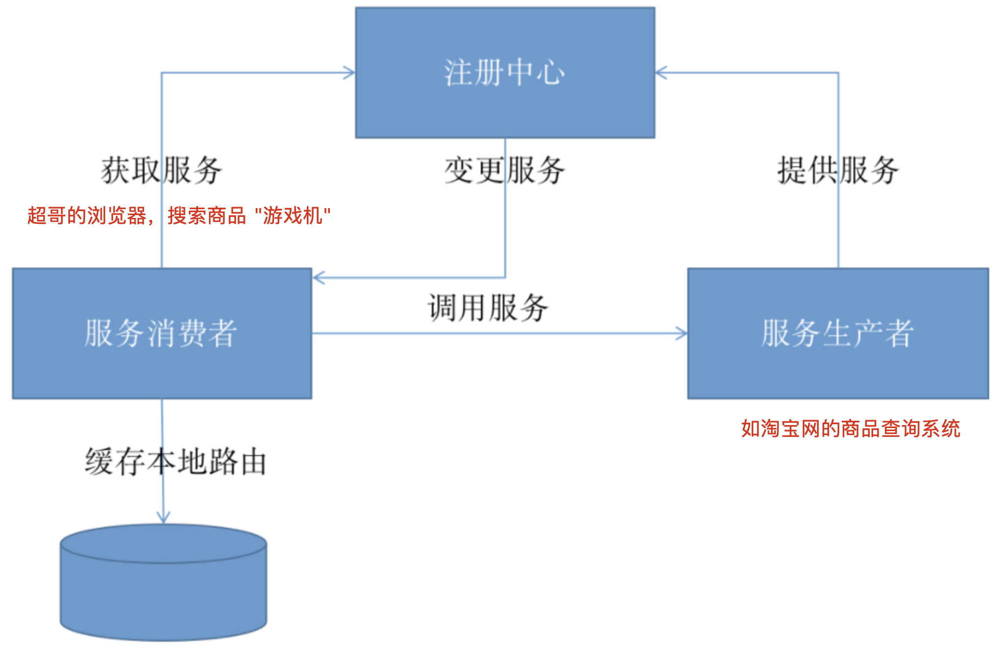
微服务下注册中心访问流程
整体的执行流程如下:
1.在服务启动时，服务提供者通过内部的注册中心客户端应用自动将自身服务注册到注册中心，包含主机地址、服务名称等等信息；
2.在服务启动或者发生变更的时候，服务消费者的注册中心客户端程序则可以从注册中心中获取那些已经注册的服务实例信息或者移除已下线的服务；
上图还多一个设计缓存本地路由，缓存本地路由是为了提高服务路由的效率和容错性，服务消费者可以配备缓存机制以加速服务路由。
更重要的是，当服务注册中心不可用时，服务消费者可以利用本地缓存路由实现对现有服务的可靠调用。
在整个执行的过程中，其中有点有一点是比较难的，就是服务消费者如何及时知道服务的生产者如何及时变更的，这个问题也是经典的生产者消费者的问题，解决的方式有两种:
1.发布-订阅模式，服务消费者能够实时监控服务更新状态，通常采用监听器以及回调机制，经典的案例就是Zookeeper；
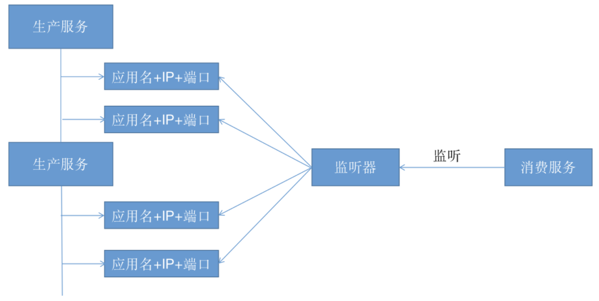
2.主动拉取策略，服务的消费者定期调用注册中心提供的服务获取接口获取最新的服务列表并更新本地缓存,经典案例就是Eureka；
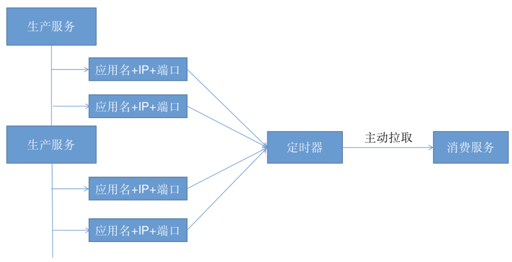
注册中心选型
简单说你在不同的公司，可能接触到的不一定。
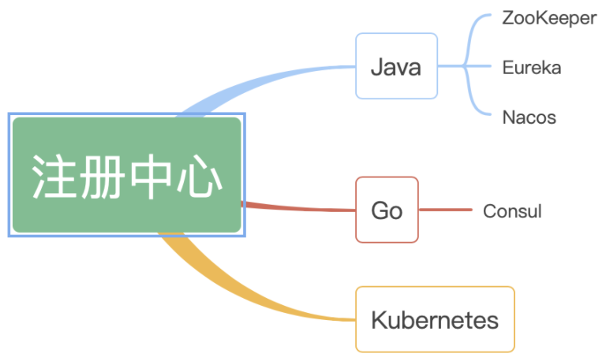
1.什么是zookeeper
什么是ZooKeeper？
ZooKeeper是一种集中式服务，用于维护配置信息、命名、提供分布式同步和提供组服务。
所有这些类型的服务都以某种形式被分布式应用程序使用。
每次实现这些服务时，都有大量的工作用于修复不可避免的错误和竞赛条件。
由于实现这类服务的难度，应用程序最初通常会忽略它们，这使得它们在变化的情况下变得很脆弱，难以管理。
即使做得正确，这些服务的不同实现方式也会导致应用程序部署时的管理复杂性。
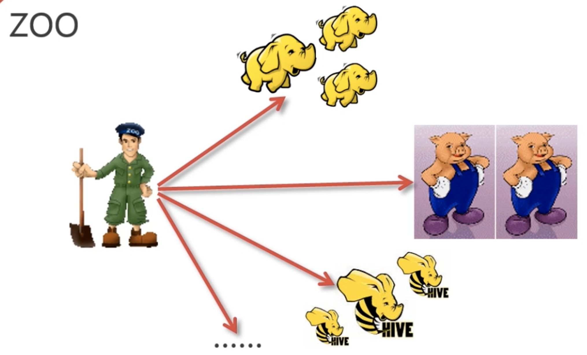
什么是集群
集群是相同功能体的复制，例如一个支付系统的集群，由3台服务器组成，则每个服务器运行的程序完全相同，功能相同，集群的目的是与负载均衡器配合，分摊运行压力。
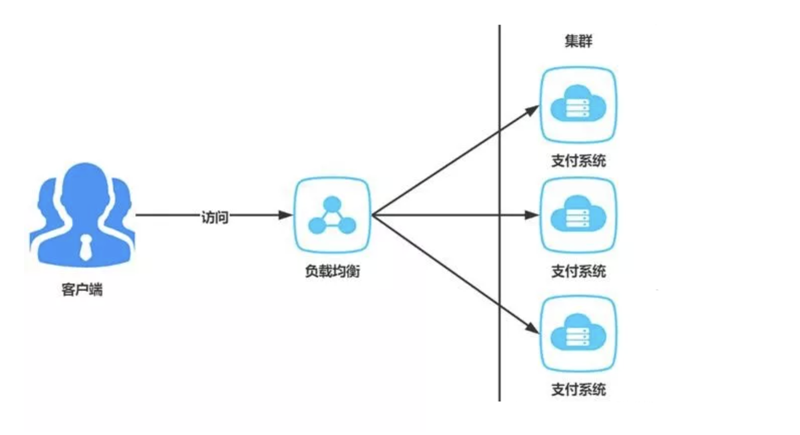
什么是分布式系统
而分布式架构的每个节点都是不同的，例如将支付系统拆分为实时支付服务、批量支付服务、对账服务，3个服务提供的功能彼此不同，相互协作成为一个系统生态，再对外提供服务。
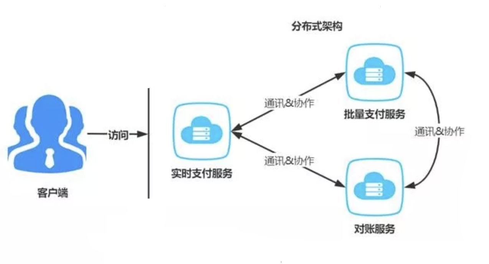
所以集群架构的每个节点服务器配置一般要求是相同的，服务之间没有通讯和协作。而分布式服务往往服务器配置是不同的，根据服务压力情况进行区分，服务之间会存在相互通讯与协作。
分布式架构往往要结合集群架构来提高可用性，例如支付系统被拆分为3个服务，为了提高每个服务的可用性，则每个服务都要采用集群模式部署。
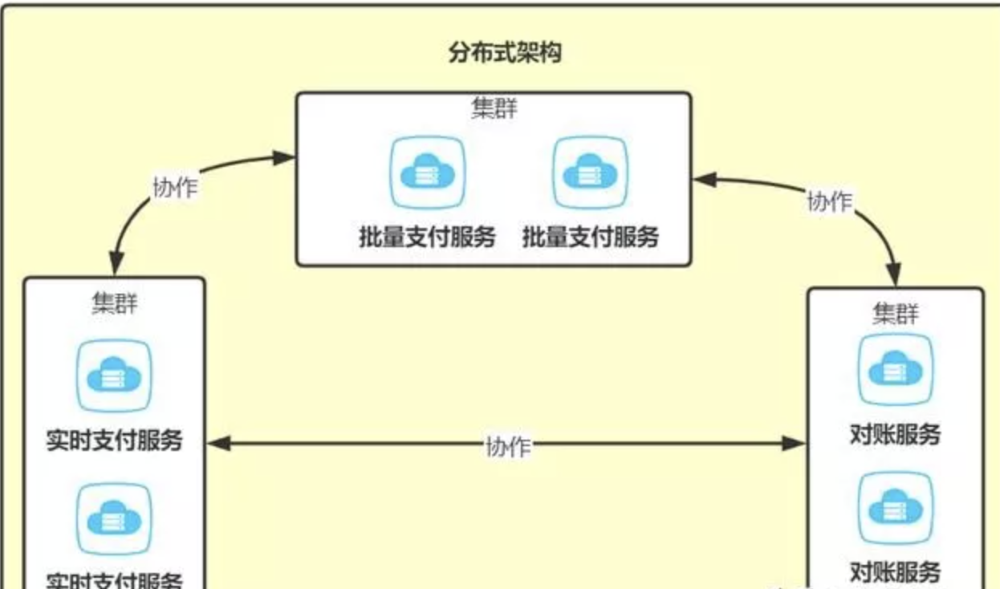
集群架构出现某个节点故障依然可以正常运行，而分布式却不一定。
1.什么是分布式系统，很多歌计算机组成一个整体，这个整体一致对外提供提出访问，处理请求。
2.内部每台机器都可以互相通信，restful、rpc
3. 客户端到服务端的一次请求，内部会经过很多台服务器去处理
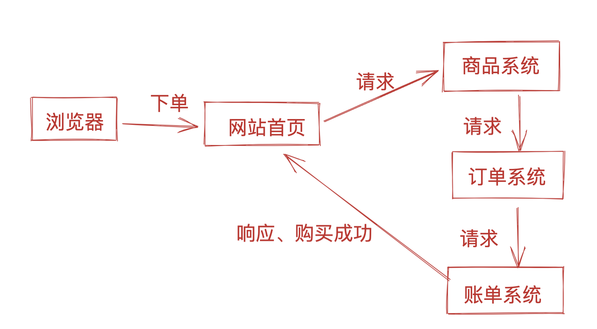
2.为什么学zk
apache hadoop项目下的一个子项目，zk，翻译就是动物管理员，也是因为 hadoop大象、hive蜜蜂、pig小猪等技术都是动物，zk是动物园里所有动物的协调者，沟通者，因此就是动物管理员了。
Zookeeper是一个开源的分布式协同服务系统，在业界的应用非常广泛，虽然最近几年有Consul、etcd、Nacos等分布式协同系统问世，但是Zookeeper依然是最主流的分布式协同服务系统。
Zookeeper也是一个设计的非常成功的软件系统，从Zookeeper最初按照预想的需求场景进行设计实现到现在，Zookeeper的对外API，在基本上没有改变的前提下，在越来越广泛的领域得到应用。
zk是java开发的软件系统，在大数据领域中，Hadoop集群、Storm集群、Kafka集群、Spark集群、Flink集群、Flume集群等主流的大数据分析平台，在集群化的场景中，推荐使用Zookeeper作为集群环境中的分布式协同服务。
简单说，只要你们公司是java系后端，zk是必有的软件系统，作为运维我们也必然得学一学。
学新技术之前，先搞清楚，为什么要学。
zk特性
1. 数据一致性，数据按顺序写入
2. 原子性，事务要么都成功，要么都失败。
3. 单一视图，客户端连接集群中的任意 zk节点，数据都是一致的。
4. 可靠性，每次对zk的操作状态，都会记录在服务端
5. 实时性，客户端可以读取到zk服务端的最新数据
zk有什么功能
配置中心
我们部署项目，一般都是写配置文件，填入项目需要连接的db、cache、以及设置一些运行参数，如超时时间，账号密码登。
问题是如果该一系列的配置，在负载均衡集群下，配置文件要更新，那就得批量更新，太费劲。
因此使用配置中心，可以很好解决这个问题，每个节点启动时，去配置中心获取信息，修改的话，也是批量同步修改。
注册中心zk的作用
一个团队里面，需要一个leader，leader是干嘛用的？管理什么的咱不说，就说如果外面的人，想问关于这个团队的一切事情，首先就会去找这个leader，因为他知道的最多，而且他的回答最靠谱。
比如产品经理小A过来要人，作为leader，老B发现小C最近没有项目安排，于是把小C安排给了小D的项目；
过了一会，另一个产品小E也过来要人，老于发现刚刚把小C安排走了，已经没人，于是就跟小E说，人都被你们产品要走了，你们产品自己去协调去。
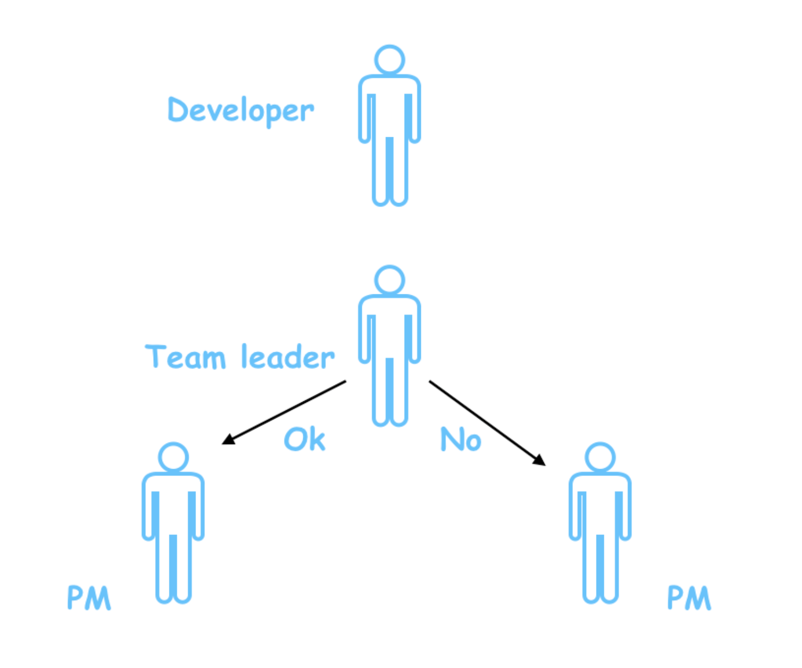
这里就是领导的作用了，如果说领导搞错了，同时将小C安排给两个业务线，那这时候，俩产品经理就肯定得打架。
同理，在如今分布式架构中，也需要这样的协调者，来对接各节点的请求。
什么是注册中心
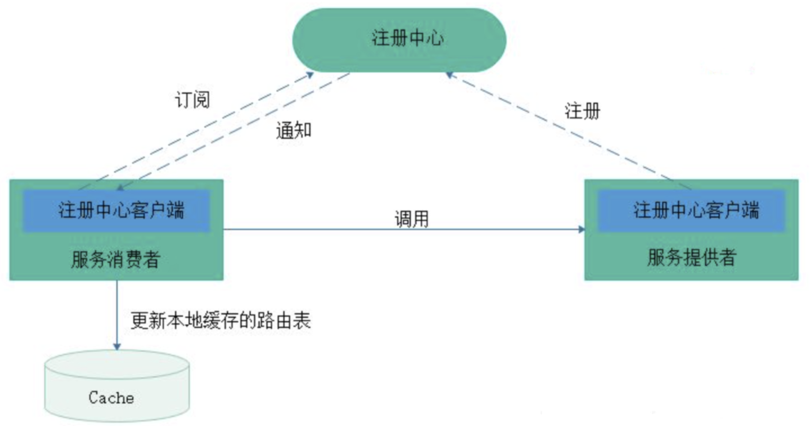
注册中心主要有三种角色：
- 服务提供者（RPC Server）：在启动时，向 Registry 注册自身服务，并向 Registry 定期发送心跳汇报存活状态。
- 服务消费者（RPC Client）：在启动时，向 Registry 订阅服务，把 Registry 返回的服务节点列表缓存在本地内存中，并与 RPC Sever 建立连接。
- 服务注册中心（Registry）：用于保存 RPC Server 的注册信息，当 RPC Server 节点发生变更时，Registry 会同步变更，RPC Client 感知后会刷新本地 内存中缓存的服务节点列表。
最后，RPC Client 从本地缓存的服务节点列表中，基于负载均衡算法选择一台 RPC Sever 发起调用。
注册中心需要提供的功能
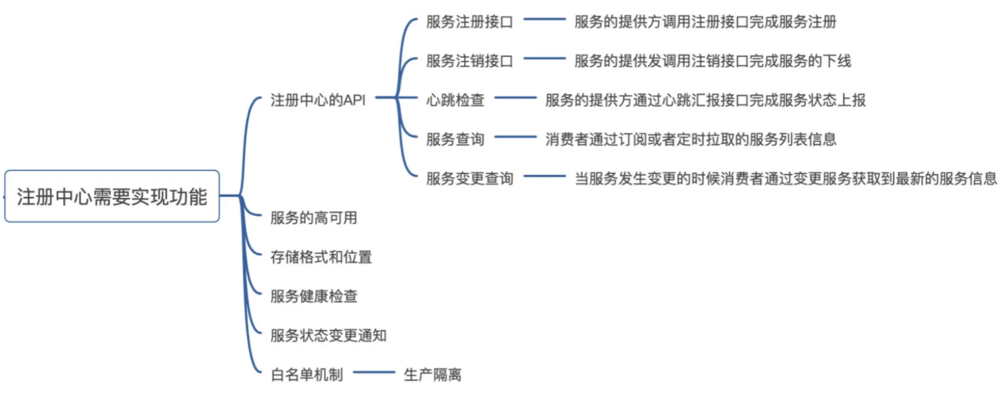
例如，mysql的主从数据库，里面就有master、slave的角色
master负责写、slave负责读、但是其他系统如何得知谁是master、slave呢。
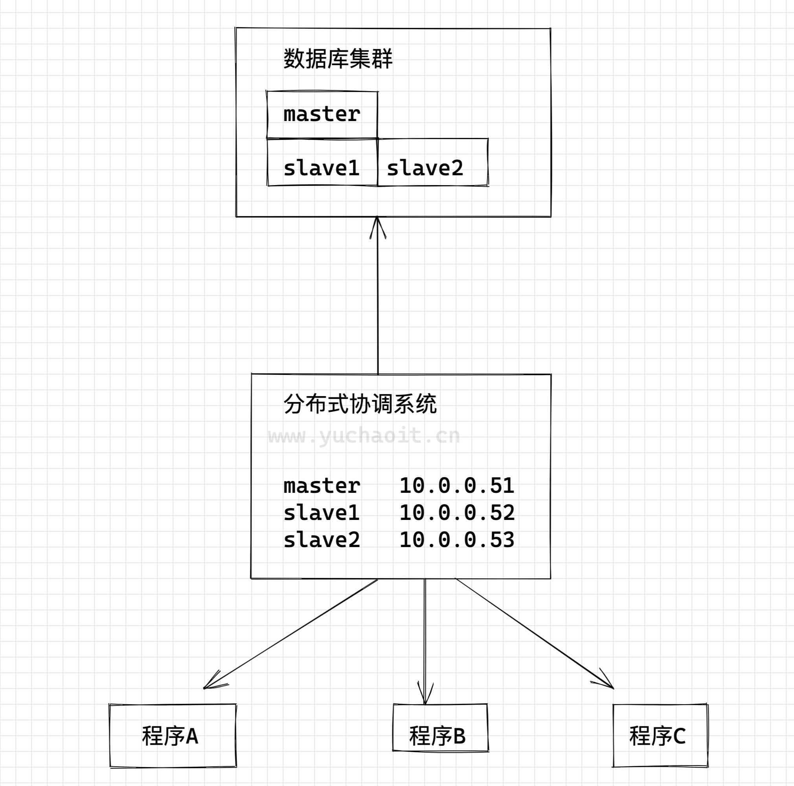
如图一个分布式协调系统，也叫做注册中心，
zk提供注册中心原理
Zookeeper可以充当一个服务注册表（Service Registry），让多个服务提供者形成一个集群，让服务消费者通过服务注册表获取具体的服务访问地址（Ip+端口）去访问具体的服务提供者。
如下图所示：
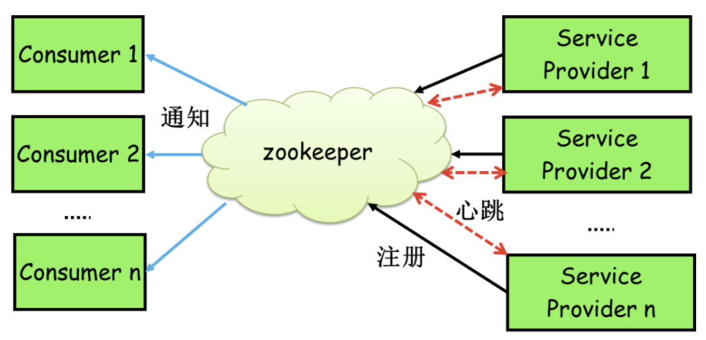
每当一个服务提供者部署后都要将自己的服务注册到zookeeper的某一路径上: /{service}/{version}/{ip:port}, 比如我们的HelloWorldService部署到两台机器
那么Zookeeper上就会创建两条目录：分别为/HelloWorldService/1.0.0/100.19.20.01:16888 /HelloWorldService/1.0.0/100.19.20.02:16888。
这么描述有点不好理解，下图更直观，zk是以树状目录提供访问。
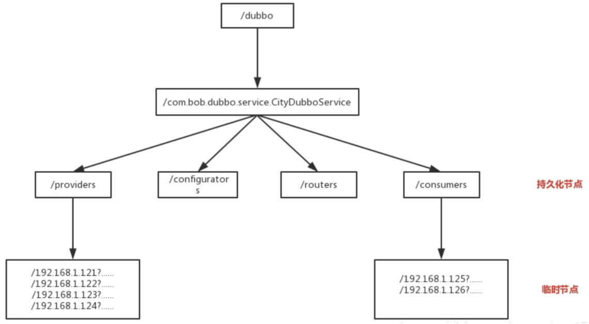
在Zookeeper中，进行服务注册，实际上就是在Zookeeper中创建了一个Znode节点，该节点存储了该服务的IP、端口、调用方式(协议、序列化方式)等。
该节点承担着最重要的职责，它由服务提供者(发布服务时)创建，以供服务消费者获取节点中的信息，从而定位到服务提供者真正IP，发起调用。
通过IP设置为临时节点，那么该节点数据不会一直存储在 ZooKeeper 服务器上。
当创建该临时节点的客户端会话因超时或发生异常而关闭时，该节点也相应在 ZooKeeper 服务器上被删除，剔除或者上线的时候会触发Zookeeper的Watch机制，会发送消息给消费者，因此就做到消费者信息的及时更新。
3.安装zk
.
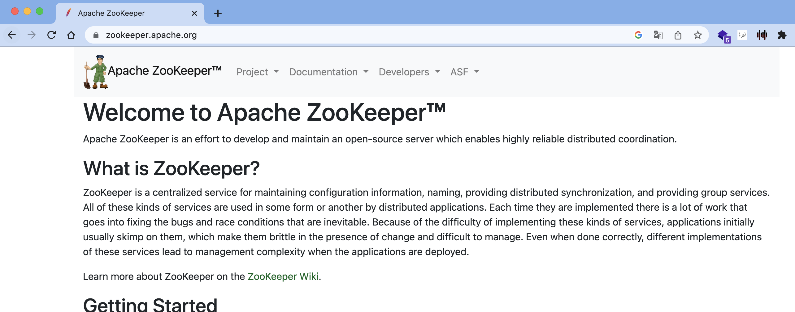
https://archive.apache.org/dist/zookeeper/zookeeper-3.5.6/
1. 准备jdk8以上
[root@localhost opt]# java -version
openjdk version "1.8.0_161"
OpenJDK Runtime Environment (build 1.8.0_161-b14)
OpenJDK 64-Bit Server VM (build 25.161-b14, mixed mode)
[root@localhost opt]#
[root@localhost opt]# ls
jdk-8u181-linux-x64.rpm rh
[root@localhost opt]#
2.上传zk软件包
https://archive.apache.org/dist/zookeeper/zookeeper-3.5.6/apache-zookeeper-3.5.6-bin.tar.gz
3.解压配置
[root@localhost opt]#
[root@localhost opt]# ln -s /opt/apache-zookeeper-3.5.6-bin /opt/zookeeper
[root@localhost opt]#
[root@localhost opt]# cd /opt/zookeeper/conf/
[root@localhost conf]# ls
configuration.xsl log4j.properties zoo_sample.cfg
[root@localhost conf]# cp zoo_sample.cfg zoo.cfg
[root@localhost conf]# mkdir /opt/zookeeper/zkdata
[root@localhost conf]#
[root@localhost conf]# vim zoo.cfg
[root@localhost conf]#
[root@localhost conf]# grep 'data' zoo.cfg
dataDir=/opt/zookeeper/zkdata
# The number of snapshots to retain in dataDir
[root@localhost conf]#
4.启动
[root@localhost conf]# /opt/zookeeper/bin/zkServer.sh start
/usr/bin/java
ZooKeeper JMX enabled by default
Using config: /opt/zookeeper/bin/../conf/zoo.cfg
Starting zookeeper ... STARTED
[root@localhost conf]#
[root@localhost conf]# netstat -tunlp|grep java
tcp6 0 0 :::2181 :::* LISTEN 12322/java
tcp6 0 0 :::38919 :::* LISTEN 12322/java
tcp6 0 0 :::8080 :::* LISTEN 12322/java
[root@localhost conf]#
5.看状态
[root@localhost conf]# /opt/zookeeper/bin/zkServer.sh status
/usr/bin/java
ZooKeeper JMX enabled by default
Using config: /opt/zookeeper/bin/../conf/zoo.cfg
Client port found: 2181. Client address: localhost.
Mode: standalone
[root@localhost conf]#
zk目录结构